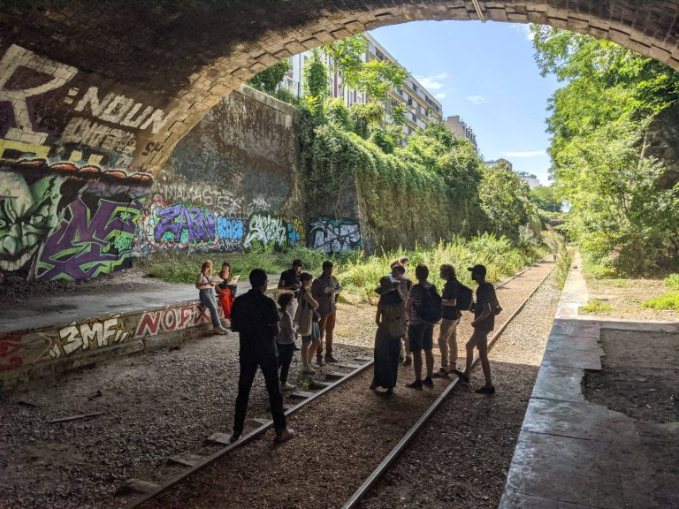
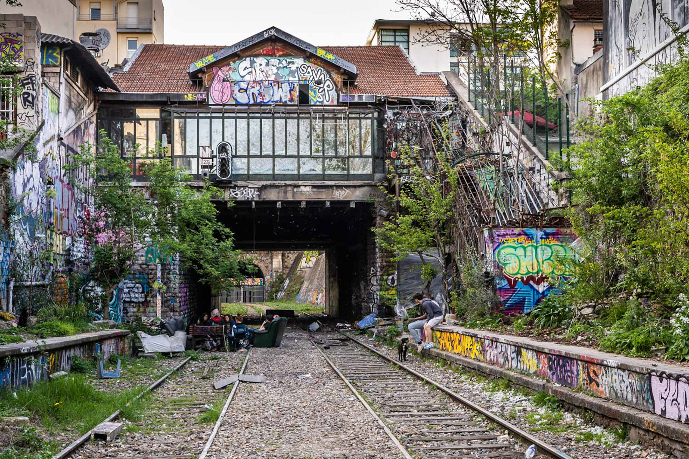
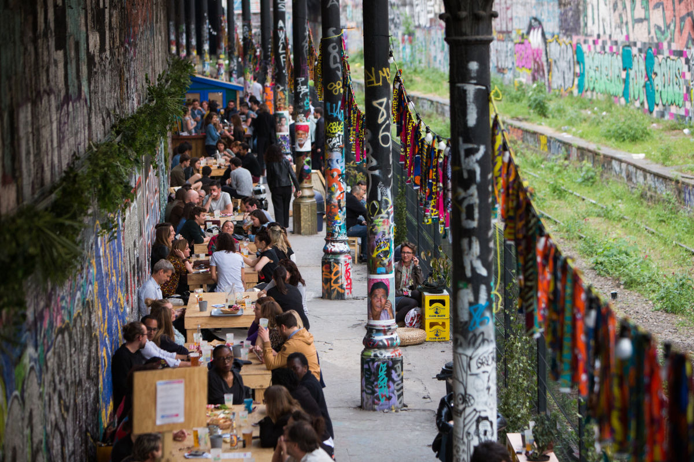

La ligne de Petite Ceinture de Paris, communément désignée sous le nom de « Petite Ceinture », est une ligne de chemin de fer à double voie de 32 kilomètres de longueur encerclant Paris à l'intérieur des boulevards des Maréchaux. Bien que faisant toujours partie du réseau ferré national, elle est aujourd'hui inutilisée sur la majeure partie de son parcours.